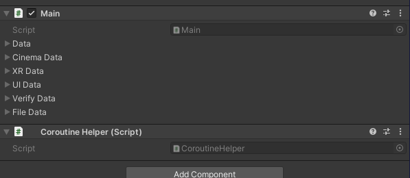

管理者快速開始
Note
繼承前言, 我們能在 Demo 場景中找到 Main 元件掛載在 GameManager 頂層遊戲物件上

Note
這主要是各個模組元件的配置結構
會將所有的模組元件列出來, 以下圖為例子. 這個管理員至少掛載了 UI, Verify 的模組
打開 Verify (認證的元件), 就可以修改配置
Tip
你可以在不改變場景結構的狀況下, 影響程式的運作行為.
這種設計上會比較複雜, 但是自由度是非常的高
如, 想要直接跳過 CRM 的認證登入, 直接勾選 Skip Login, 剩下的交由底層邏輯去判斷